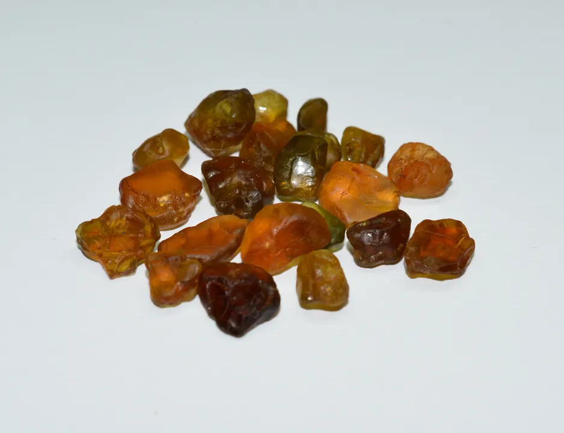
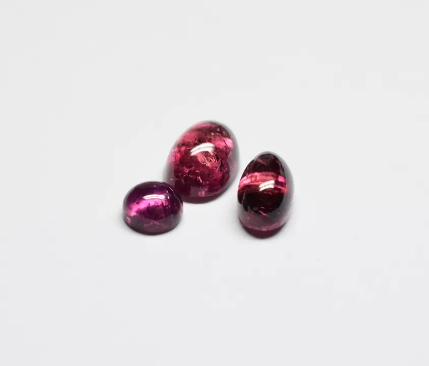

鋯石：鑽石的古老替身
鋯石與立方氧化鋯，名字差一個字、身價差十倍——天然鋯石是寶石，CZ 只是仿品。


核心定義
鋯石（zircon）是鋯矽酸鹽（ZrSiO₄），天然寶石礦物——它與「立方氧化鋯」（cubic zirconia，CZ，人造材料）是兩回事。鋯石硬度 6–7.5、折射率 1.92–1.98（高型）、色散高（火彩近鑽石）——它是鑽石最早的天然「替身」之一。
分類：高型鋯石（晶體完整、折射率高、透明）、中型、低型（輻射損傷、混濁）——高型鋯石才是寶石級。加熱可把棕褐鋯石變無色或藍色（熱處理是標準優化）。
特徵與分類
| 類型 | 狀態 | 特徵 |
|---|---|---|
| 高型 | 晶體完整 | 透明、火彩強 |
| 中型 | 部分損傷 | 混濁 |
| 低型 | 輻射損傷 | 不透明、廢料 |
鋯石最迷人的是「火彩」：色散約 0.039（鑽石 0.044）——無色高型鋯石的閃爍感直逼鑽石，是「天然鑽石替身」的王者。藍色鋯石（加熱產物）是市場主流色。
科學原理
鋯石的雙折射極高（0.059）——放大鏡下可見「重影」（背面棱線成雙）——這是鋯石與鑽石（單折射）的關鍵差異，也是與 CZ（單折射）的區分。折射率 1.92–1.98 高於多數寶石。
加熱處理：棕褐鋯石加熱到 900-1000°C 可變無色或藍色——藍鋯石（Starlite）是加熱的標準產品。輻射損傷（低型）讓鋯石變綠褐混濁——鋯石的狀態（高/中/低）影響價值。
鑑定與鑑別方法
- 看重影：鋯石強雙折射（vs 鑽石單折射）
- 折射儀：1.92–1.98
- 掂比重：鋯石重（4.6）
- 區分 CZ：CZ 單折射、比重 5.6
- 證書：處理狀態與類型
市場行情與保養建議
行情：鋯石是「高性價比火彩寶石」——無色與藍色鋯石每克拉數十至數百人民幣。它常被誤認為 CZ（立方氧化鋯），其實是天然寶石——「鋯石」三個字在市場上吃了名字的虧。
選購：鋯石買「高型＋火彩強」——無色鋯石是鑽石的平價替身、藍鋯石是獨特色系。名氣不如鑽石，但它的火彩貨真價實。
常見誤區
鋯石是天然礦物（鋯矽酸鹽），CZ 是人造氧化物——兩者完全不同。名字像，身世與價格天差地別。
高型寶石級鋯石放射性極低（安全）——低型鋯石含微量放射元素，但寶石級不構成健康風險。
冷知識
zircon 是天然寶石（數億年地質史），CZ 是 1970 年代的實驗室產品——一個有身世，一個有工藝。
市場上漂亮的藍色鋯石，幾乎都是棕褐原石加熱變色——熱處理讓鋯石「由棕轉藍」。
反直覺觀點
「鋯石」聽起來像仿品，實際是天然寶石——它被 CZ 的「氧化鋯」名字拖累。真寶石背了假名字的鍋。
色散 0.039 vs 鑽石 0.044——火彩幾乎並駕齊驅，價格天差地別。性價比之王，往往低調。